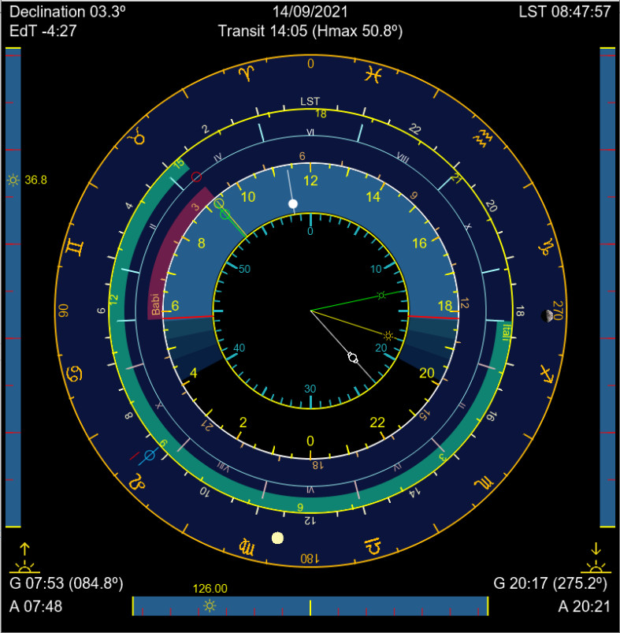

El tiempo es una sombra
|
|
|
El tiempo es una sombra |
SolarDial |
|  |
SolarDial is a Java version, and therefore executable on Windows, of the Astronomical Clock module of the SolarInfo Android app. SolarDial allows to have on the desktop a dial with almost all the types of hours that can be displayed in a sundial as well as other information about the position of the Sun, useful for gnomonics. |
|
Download |